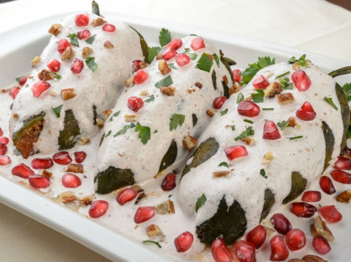

This traditional Mexican dish is from the area of Puebla. Poblano chiles are stuffed with a flavorful ground pork stuffing, then covered in a creamy walnut sauce and garnished with pomegranate seeds and parsley.
Ingredients
Filling:
- 1 tablespoon olive oil
- 1 onion, chopped
- 2 cloves garlic, finely chopped
- 1 ¾ pounds ground pork
- 2 cups peeled, seeded, and chopped tomatoes
- 1 ripe plantain, chopped
- 1 apple, chopped
- 1 fresh peach, chopped
- 1 bunch fresh parsley, chopped
- 2 tablespoons chopped candied orange peel
- 2 tablespoons pine nuts
- 2 tablespoons raisins
- 2 tablespoons blanched almonds, chopped
- 4 whole cloves, ground
- salt and pepper to taste
Sauce:
- 2 ½ cups chopped walnuts
- 1 ¾ cups milk
- ¾ cup soft goat cheese
- 1 tablespoon white sugar
- 1 (1 inch) piece cinnamon stick
Garnish:
- 1 ½ cups pomegranate seeds
- ½ cup chopped fresh parsley
Steps
- Roast poblano chiles over an open flame on a gas stove or grill until the skin is black and charred on all sides, turning often, 10 to 15 minutes.
- Place the charred chiles in a plastic bag or in a large bowl covered with plastic wrap. Allow to sit for 5 to 10 minutes, then open and peel off the skin. Cut a slit in each chile lengthwise and remove the seeds.
- Heat olive oil in a large pot over medium heat. Add onion and garlic and cook until soft and translucent, 3 to 4 minutes. Add ground pork and cook until browned, breaking up with a spoon while cooking, about 7 minutes. Mix in tomatoes, plantain, apple, peach, parsley, candied orange peel, pine nuts, raisins, almonds, cloves, salt, and pepper. Simmer until filling is cooked through and flavors are well combined, about 10 minutes.
- Combine walnuts, milk, goat cheese, sugar, and cinnamon stick in a blender; blend until walnut sauce is smooth and creamy.
- Fill each poblano chile with the pork filling and place on a plate. Spoon walnut sauce over chile and sprinkle with pomegranate seeds and parsley.
Cook's Notes:
This is a great make ahead dish - you can make the filling ahead of time, roast the chiles ahead of time, then whip up the sauce and assemble at the last minute.
You can use ready-ground cinnamon and cloves instead of grinding the whole spices yourself.
Instead of the candied orange peel, you can use Acitrón, a traditional Mexican candy that's made of crystallized biznaga cactus and used in many sweet and savory dishes.